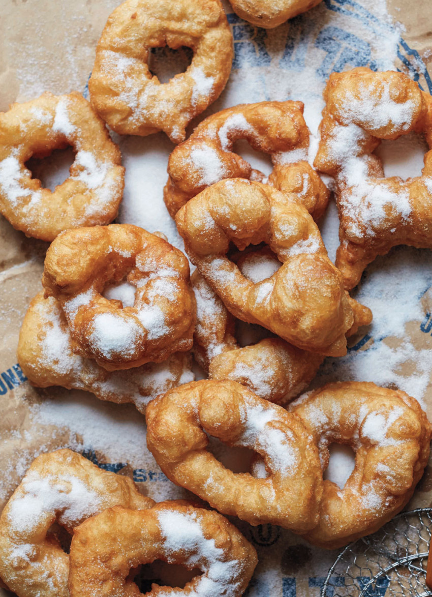

ingridians:
- 1 kg (8 cups) flour
- 2 Tablespoons dry yeast
- 2 1/2 Tablespoons sugar
- 1 packet of baking powder
- 1/2 teaspoon salt
- 2-3 cups of lukewarm water
- oil for frying
how to make
-
In a big mixing bowl combine all
dry ingredients. Add water one cup at a time.
-
Knead with your hands until the dough is
very loose, sticky, it will be a bit runny
-
Cover the bowl with plastic wrap and a towel in
a warm place and let rise for about an hour.
- Heat the oil in a large saucepan.
-
Set the bowl of batter to one side of the
saucepan and place a paper towel–lined sheet
pan on the other side. Place a bowl with water next to the batter.
You want your hands to be wet in order to work with the dough.
-
With wet hands break off a fistful of the batter, and force your thumb
through the center of the mass. Gently form a doughnut shape
- Carefully place the doughnut in the hot oil.
-
Fry the doughnuts until they are golden brown on
both sides. Once both sides are golden brown,
after just 2 to 3 minutes, transfer
the doughnuts to the prepared sheet pan and repeat with more batter.
- roll the still-warm doughnuts in granulated sugar.